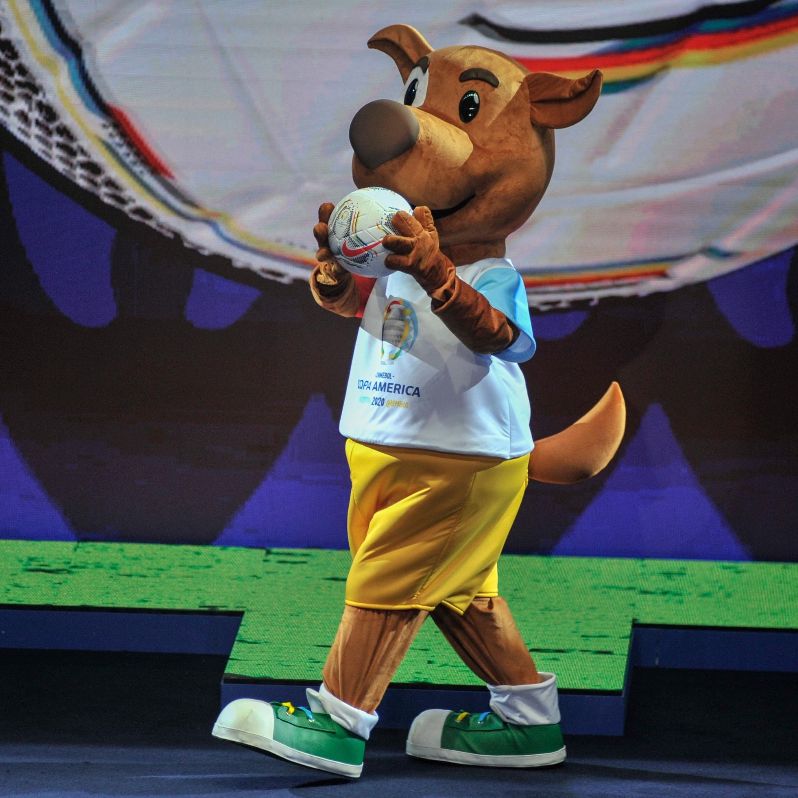

La Pasion de la Copa America
El torneo más esperado de todos los sudamericanos y los aficionados al buen futbol, porque se da inicio de la Copa América, el torneo más antiguo del mundo, que llenará las pantallas de TV e internet de intensos partidos, para los que se han preparado las 12 selecciones, 10 suramericanas y dos invitados muy especiales, Australia y Qatar que buscarán levantar el título. Todos los equipos ya están listos para el debut correspondiente, con invitados de todo el mundo.
En el mundo no hay un deporte que aglutine masas, que mueva corazones y que despierte tanto patriotismo como el fútbol. Es una pasión que invade el alma, una religión que une sin distingos de clases, a ricos, pobres, blancos y negros. En todos los países la gente se une en una sola voz para apoyar a su Selección, o al equipo de sus amores.
La Gozadera
El tema “La Gozadera”, es una versión adaptada para la Copa sobre el éxito de Marc Anthony que alcanzó en su momento 12 discos de platino. El tema de la Copa está a cargo de Gente de Zona, que comenzó como un colectivo callejero de rap y hoy es uno de los dúos más reconocidos a nivel mundial. A sus integrantes Alexander Delgado Hernández y Randy Malcom Martínez los recordamos por su primer éxito “Bailando”, la colaboración entre Enrique Iglesias, Descemer Bueno y Gente de Zona, la canción más impactante del 2014.